TensorFlow 模型建立与训练¶
本章介绍如何使用 TensorFlow 快速搭建动态模型。
模型的构建：
tf.keras.Model和tf.keras.layers模型的损失函数：
tf.keras.losses模型的优化器：
tf.keras.optimizer模型的评估：
tf.keras.metrics
前置知识
Python 面向对象编程 （在 Python 内定义类和方法、类的继承、构造和析构函数，使用 super() 函数调用父类方法 ，使用__call__() 方法对实例进行调用 等）；
多层感知机、卷积神经网络、循环神经网络和强化学习（每节之前给出参考资料）。
Python 的函数装饰器 （非必须）
模型（Model）与层（Layer）¶
在 TensorFlow 中，推荐使用 Keras（ tf.keras ）构建模型。Keras 是一个广为流行的高级神经网络 API，简单、快速而不失灵活性，现已得到 TensorFlow 的官方内置和全面支持。
Keras 有两个重要的概念： 模型（Model） 和 层（Layer） 。层将各种计算流程和变量进行了封装（例如基本的全连接层，CNN 的卷积层、池化层等），而模型则将各种层进行组织和连接，并封装成一个整体，描述了如何将输入数据通过各种层以及运算而得到输出。在需要模型调用的时候，使用 y_pred = model(X) 的形式即可。Keras 在 tf.keras.layers 下内置了深度学习中大量常用的的预定义层，同时也允许我们自定义层。
Keras 模型以类的形式呈现，我们可以通过继承 tf.keras.Model 这个 Python 类来定义自己的模型。在继承类中，我们需要重写 __init__() （构造函数，初始化）和 call(input) （模型调用）两个方法，同时也可以根据需要增加自定义的方法。
class MyModel(tf.keras.Model):
def __init__(self):
super().__init__() # Python 2 下使用 super(MyModel, self).__init__()
# 此处添加初始化代码（包含 call 方法中会用到的层），例如
# layer1 = tf.keras.layers.BuiltInLayer(...)
# layer2 = MyCustomLayer(...)
def call(self, input):
# 此处添加模型调用的代码（处理输入并返回输出），例如
# x = layer1(input)
# output = layer2(x)
return output
# 还可以添加自定义的方法

Keras 模型类定义示意图¶
继承 tf.keras.Model 后，我们同时可以使用父类的若干方法和属性，例如在实例化类 model = Model() 后，可以通过 model.variables 这一属性直接获得模型中的所有变量，免去我们一个个显式指定变量的麻烦。
上一章中简单的线性模型 y_pred = a * X + b ，我们可以通过模型类的方式编写如下：
import tensorflow as tf
X = tf.constant([[1.0, 2.0, 3.0], [4.0, 5.0, 6.0]])
y = tf.constant([[10.0], [20.0]])
class Linear(tf.keras.Model):
def __init__(self):
super().__init__()
self.dense = tf.keras.layers.Dense(
units=1,
activation=None,
kernel_initializer=tf.zeros_initializer(),
bias_initializer=tf.zeros_initializer()
)
def call(self, input):
output = self.dense(input)
return output
# 以下代码结构与前节类似
model = Linear()
optimizer = tf.keras.optimizers.SGD(learning_rate=0.01)
for i in range(100):
with tf.GradientTape() as tape:
y_pred = model(X) # 调用模型 y_pred = model(X) 而不是显式写出 y_pred = a * X + b
loss = tf.reduce_mean(tf.square(y_pred - y))
grads = tape.gradient(loss, model.variables) # 使用 model.variables 这一属性直接获得模型中的所有变量
optimizer.apply_gradients(grads_and_vars=zip(grads, model.variables))
print(model.variables)
这里，我们没有显式地声明 a 和 b 两个变量并写出 y_pred = a * X + b 这一线性变换，而是建立了一个继承了 tf.keras.Model 的模型类 Linear 。这个类在初始化部分实例化了一个 全连接层 （ tf.keras.layers.Dense ），并在 call 方法中对这个层进行调用，实现了线性变换的计算。如果需要显式地声明自己的变量并使用变量进行自定义运算，或者希望了解 Keras 层的内部原理，请参考 自定义层。
Keras 的全连接层：线性变换 + 激活函数
全连接层 （Fully-connected Layer，tf.keras.layers.Dense ）是 Keras 中最基础和常用的层之一，对输入矩阵  进行
进行  的线性变换 + 激活函数操作。如果不指定激活函数，即是纯粹的线性变换
的线性变换 + 激活函数操作。如果不指定激活函数，即是纯粹的线性变换  。具体而言，给定输入张量
。具体而言，给定输入张量 input = [batch_size, input_dim] ，该层对输入张量首先进行 tf.matmul(input, kernel) + bias 的线性变换（ kernel 和 bias 是层中可训练的变量），然后对线性变换后张量的每个元素通过激活函数 activation ，从而输出形状为 [batch_size, units] 的二维张量。
{kind=link}
其包含的主要参数如下：
units：输出张量的维度；activation：激活函数，对应于 中的  ，默认为无激活函数（
，默认为无激活函数（ a(x) = x）。常用的激活函数包括tf.nn.relu、tf.nn.tanh和tf.nn.sigmoid；use_bias：是否加入偏置向量bias，即 中的 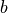。默认为 True；kernel_initializer、bias_initializer：权重矩阵kernel和偏置向量bias两个变量的初始化器。默认为tf.glorot_uniform_initializer1 。设置为tf.zeros_initializer表示将两个变量均初始化为全 0；
该层包含权重矩阵 kernel = [input_dim, units] 和偏置向量 bias = [units] 2 两个可训练变量，对应于 中的 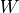 和 。
这里着重从数学矩阵运算和线性变换的角度描述了全连接层。基于神经元建模的描述可参考 后文介绍 。
- 1
Keras 中的很多层都默认使用
tf.glorot_uniform_initializer初始化变量，关于该初始化器可参考 https://www.tensorflow.org/api_docs/python/tf/glorot_uniform_initializer 。- 2
你可能会注意到，
tf.matmul(input, kernel)的结果是一个形状为[batch_size, units]的二维矩阵，这个二维矩阵要如何与形状为[units]的一维偏置向量bias相加呢？事实上，这里是 TensorFlow 的 Broadcasting 机制在起作用，该加法运算相当于将二维矩阵的每一行加上了Bias。Broadcasting 机制的具体介绍可见 https://www.tensorflow.org/xla/broadcasting 。
为什么模型类是重载 call() 方法而不是 __call__() 方法？
在 Python 中，对类的实例 myClass 进行形如 myClass() 的调用等价于 myClass.__call__() （具体请见本章初 “前置知识” 的 __call__() 部分）。那么看起来，为了使用 y_pred = model(X) 的形式调用模型类，应该重写 __call__() 方法才对呀？原因是 Keras 在模型调用的前后还需要有一些自己的内部操作，所以暴露出一个专门用于重载的 call() 方法。 tf.keras.Model 这一父类已经包含 __call__() 的定义。 __call__() 中主要调用了 call() 方法，同时还需要在进行一些 keras 的内部操作。这里，我们通过继承 tf.keras.Model 并重载 call() 方法，即可在保持 keras 结构的同时加入模型调用的代码。
基础示例：多层感知机（MLP）¶
我们从编写一个最简单的 多层感知机 （Multilayer Perceptron, MLP），或者说 “多层全连接神经网络” 开始，介绍 TensorFlow 的模型编写方式。在这一部分，我们依次进行以下步骤：
使用
tf.keras.datasets获得数据集并预处理使用
tf.keras.Model和tf.keras.layers构建模型构建模型训练流程，使用
tf.keras.losses计算损失函数，并使用tf.keras.optimizer优化模型构建模型评估流程，使用
tf.keras.metrics计算评估指标
基础知识和原理
UFLDL 教程 Multi-Layer Neural Network 一节；
斯坦福课程 CS231n: Convolutional Neural Networks for Visual Recognition 中的 “Neural Networks Part 1 ~ 3” 部分。
这里，我们使用多层感知机完成 MNIST 手写体数字图片数据集 [LeCun1998] 的分类任务。

MNIST 手写体数字图片示例¶
数据获取及预处理： tf.keras.datasets¶
先进行预备工作，实现一个简单的 MNISTLoader 类来读取 MNIST 数据集数据。这里使用了 tf.keras.datasets 快速载入 MNIST 数据集。
class MNISTLoader():
def __init__(self):
mnist = tf.keras.datasets.mnist
(self.train_data, self.train_label), (self.test_data, self.test_label) = mnist.load_data()
# MNIST中的图像默认为uint8（0-255的数字）。以下代码将其归一化到0-1之间的浮点数，并在最后增加一维作为颜色通道
self.train_data = np.expand_dims(self.train_data.astype(np.float32) / 255.0, axis=-1) # [60000, 28, 28, 1]
self.test_data = np.expand_dims(self.test_data.astype(np.float32) / 255.0, axis=-1) # [10000, 28, 28, 1]
self.train_label = self.train_label.astype(np.int32) # [60000]
self.test_label = self.test_label.astype(np.int32) # [10000]
self.num_train_data, self.num_test_data = self.train_data.shape[0], self.test_data.shape[0]
def get_batch(self, batch_size):
# 从数据集中随机取出batch_size个元素并返回
index = np.random.randint(0, np.shape(self.train_data)[0], batch_size)
return self.train_data[index, :], self.train_label[index]
提示
mnist = tf.keras.datasets.mnist 将从网络上自动下载 MNIST 数据集并加载。如果运行时出现网络连接错误，可以从 https://storage.googleapis.com/tensorflow/tf-keras-datasets/mnist.npz 或 https://s3.amazonaws.com/img-datasets/mnist.npz 下载 MNIST 数据集 mnist.npz 文件，并放置于用户目录的 .keras/dataset 目录下（Windows 下用户目录为 C:\Users\用户名 ，Linux 下用户目录为 /home/用户名 ）。
TensorFlow 的图像数据表示
在 TensorFlow 中，图像数据集的一种典型表示是 [图像数目，长，宽，色彩通道数] 的四维张量。在上面的 DataLoader 类中， self.train_data 和 self.test_data 分别载入了 60,000 和 10,000 张大小为 28*28 的手写体数字图片。由于这里读入的是灰度图片，色彩通道数为 1（彩色 RGB 图像色彩通道数为 3），所以我们使用 np.expand_dims() 函数为图像数据手动在最后添加一维通道。
模型的构建： tf.keras.Model 和 tf.keras.layers¶
多层感知机的模型类实现与上面的线性模型类似，使用 tf.keras.Model 和 tf.keras.layers 构建，所不同的地方在于层数增加了（顾名思义，“多层” 感知机），以及引入了非线性激活函数（这里使用了 ReLU 函数 ， 即下方的 activation=tf.nn.relu ）。该模型输入一个向量（比如这里是拉直的 1×784 手写体数字图片），输出 10 维的向量，分别代表这张图片属于 0 到 9 的概率。
class MLP(tf.keras.Model):
def __init__(self):
super().__init__()
self.flatten = tf.keras.layers.Flatten() # Flatten层将除第一维（batch_size）以外的维度展平
self.dense1 = tf.keras.layers.Dense(units=100, activation=tf.nn.relu)
self.dense2 = tf.keras.layers.Dense(units=10)
def call(self, inputs): # [batch_size, 28, 28, 1]
x = self.flatten(inputs) # [batch_size, 784]
x = self.dense1(x) # [batch_size, 100]
x = self.dense2(x) # [batch_size, 10]
output = tf.nn.softmax(x)
return output
softmax 函数
这里，因为我们希望输出 “输入图片分别属于 0 到 9 的概率”，也就是一个 10 维的离散概率分布，所以我们希望这个 10 维向量至少满足两个条件：
该向量中的每个元素均在
![[0, 1]](../../_images/math/8027137b3073a7f5ca4e45ba2d030dcff154eca4.png) 之间；
之间；该向量的所有元素之和为 1。
为了使得模型的输出能始终满足这两个条件，我们使用 Softmax 函数 （归一化指数函数， tf.nn.softmax ）对模型的原始输出进行归一化。其形式为  。不仅如此，softmax 函数能够凸显原始向量中最大的值，并抑制远低于最大值的其他分量，这也是该函数被称作 softmax 函数的原因（即平滑化的 argmax 函数）。
。不仅如此，softmax 函数能够凸显原始向量中最大的值，并抑制远低于最大值的其他分量，这也是该函数被称作 softmax 函数的原因（即平滑化的 argmax 函数）。
{kind=link}
模型的训练： tf.keras.losses 和 tf.keras.optimizer¶
定义一些模型超参数：
num_epochs = 5
batch_size = 50
learning_rate = 0.001
实例化模型和数据读取类，并实例化一个 tf.keras.optimizer 的优化器（这里使用常用的 Adam 优化器）：
model = MLP()
data_loader = MNISTLoader()
optimizer = tf.keras.optimizers.Adam(learning_rate=learning_rate)
然后迭代进行以下步骤：
从 DataLoader 中随机取一批训练数据；
将这批数据送入模型，计算出模型的预测值；
将模型预测值与真实值进行比较，计算损失函数（loss）。这里使用
tf.keras.losses中的交叉熵函数作为损失函数；计算损失函数关于模型变量的导数；
将求出的导数值传入优化器，使用优化器的
apply_gradients方法更新模型参数以最小化损失函数（优化器的详细使用方法见 前章 ）。
具体代码实现如下：
num_batches = int(data_loader.num_train_data // batch_size * num_epochs)
for batch_index in range(num_batches):
X, y = data_loader.get_batch(batch_size)
with tf.GradientTape() as tape:
y_pred = model(X)
loss = tf.keras.losses.sparse_categorical_crossentropy(y_true=y, y_pred=y_pred)
loss = tf.reduce_mean(loss)
print("batch %d: loss %f" % (batch_index, loss.numpy()))
grads = tape.gradient(loss, model.variables)
optimizer.apply_gradients(grads_and_vars=zip(grads, model.variables))
交叉熵（cross entropy）与 tf.keras.losses
你或许注意到了，在这里，我们没有显式地写出一个损失函数，而是使用了 tf.keras.losses 中的 sparse_categorical_crossentropy （交叉熵）函数，将模型的预测值 y_pred 与真实的标签值 y 作为函数参数传入，由 Keras 帮助我们计算损失函数的值。
交叉熵作为损失函数，在分类问题中被广泛应用。其离散形式为  ，其中 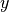 为真实概率分布， 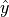 为预测概率分布，
，其中 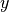 为真实概率分布， 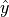 为预测概率分布，  为分类任务的类别个数。预测概率分布与真实分布越接近，则交叉熵的值越小，反之则越大。更具体的介绍及其在机器学习中的应用可参考 这篇博客文章 。
为分类任务的类别个数。预测概率分布与真实分布越接近，则交叉熵的值越小，反之则越大。更具体的介绍及其在机器学习中的应用可参考 这篇博客文章 。
在 tf.keras 中，有两个交叉熵相关的损失函数 tf.keras.losses.categorical_crossentropy 和 tf.keras.losses.sparse_categorical_crossentropy 。其中 sparse 的含义是，真实的标签值 y_true 可以直接传入 int 类型的标签类别。具体而言：
loss = tf.keras.losses.sparse_categorical_crossentropy(y_true=y, y_pred=y_pred)
与
loss = tf.keras.losses.categorical_crossentropy(
y_true=tf.one_hot(y, depth=tf.shape(y_pred)[-1]),
y_pred=y_pred
)
的结果相同。
模型的评估： tf.keras.metrics¶
最后，我们使用测试集评估模型的性能。这里，我们使用 tf.keras.metrics 中的 SparseCategoricalAccuracy 评估器来评估模型在测试集上的性能，该评估器能够对模型预测的结果与真实结果进行比较，并输出预测正确的样本数占总样本数的比例。我们迭代测试数据集，每次通过 update_state() 方法向评估器输入两个参数： y_pred 和 y_true ，即模型预测出的结果和真实结果。评估器具有内部变量来保存当前评估指标相关的参数数值（例如当前已传入的累计样本数和当前预测正确的样本数）。迭代结束后，我们使用 result() 方法输出最终的评估指标值（预测正确的样本数占总样本数的比例）。
在以下代码中，我们实例化了一个 tf.keras.metrics.SparseCategoricalAccuracy 评估器，并使用 For 循环迭代分批次传入了测试集数据的预测结果与真实结果，并输出训练后的模型在测试数据集上的准确率。
sparse_categorical_accuracy = tf.keras.metrics.SparseCategoricalAccuracy()
num_batches = int(data_loader.num_test_data // batch_size)
for batch_index in range(num_batches):
start_index, end_index = batch_index * batch_size, (batch_index + 1) * batch_size
y_pred = model.predict(data_loader.test_data[start_index: end_index])
sparse_categorical_accuracy.update_state(y_true=data_loader.test_label[start_index: end_index], y_pred=y_pred)
print("test accuracy: %f" % sparse_categorical_accuracy.result())
输出结果:
test accuracy: 0.947900
可以注意到，使用这样简单的模型，已经可以达到 95% 左右的准确率。
神经网络的基本单位：神经元 3
如果我们将上面的神经网络放大来看，详细研究计算过程，比如取第二层的第 k 个计算单元，可以得到示意图如下：
{kind=link}
该计算单元  有 100 个权值参数
有 100 个权值参数  和 1 个偏置参数
和 1 个偏置参数  。将第 1 层中所有的 100 个计算单元
。将第 1 层中所有的 100 个计算单元  的值作为输入，分别按权值
的值作为输入，分别按权值  加和（即 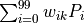 ），并加上偏置值 ，然后送入激活函数 进行计算，即得到输出结果。
加和（即 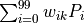 ），并加上偏置值 ，然后送入激活函数 进行计算，即得到输出结果。
事实上，这种结构和真实的神经细胞（神经元）类似。神经元由树突、胞体和轴突构成。树突接受其他神经元传来的信号作为输入（一个神经元可以有数千甚至上万树突），胞体对电位信号进行整合，而产生的信号则通过轴突传到神经末梢的突触，传播到下一个（或多个）神经元。
{kind=link}
神经细胞模式图（修改自 Quasar Jarosz at English Wikipedia [CC BY-SA 3.0 (https://creativecommons.org/licenses/by-sa/3.0)]）¶
上面的计算单元，可以被视作对神经元结构的数学建模。在上面的例子里，第二层的每一个计算单元（人工神经元）有 100 个权值参数和 1 个偏置参数，而第二层计算单元的数目是 10 个，因此这一个全连接层的总参数量为 100*10 个权值参数和 10 个偏置参数。事实上，这正是该全连接层中的两个变量 kernel 和 bias 的形状。仔细研究一下，你会发现，这里基于神经元建模的介绍与上文基于矩阵计算的介绍是等价的。
- 3
事实上，应当是先有神经元建模的概念，再有基于人工神经元和层结构的人工神经网络。但由于本手册着重介绍 TensorFlow 的使用方法，所以调换了介绍顺序。
卷积神经网络（CNN）¶
卷积神经网络 （Convolutional Neural Network, CNN）是一种结构类似于人类或动物的 视觉系统 的人工神经网络，包含一个或多个卷积层（Convolutional Layer）、池化层（Pooling Layer）和全连接层（Fully-connected Layer）。
基础知识和原理
台湾大学李宏毅教授的《机器学习》课程的 Convolutional Neural Network 一章；
UFLDL 教程 Convolutional Neural Network 一节；
斯坦福课程 CS231n: Convolutional Neural Networks for Visual Recognition 中的 “Module 2: Convolutional Neural Networks” 部分。
使用Keras实现卷积神经网络¶
卷积神经网络的一个示例实现如下所示，和 上节中的多层感知机 在代码结构上很类似，只是新加入了一些卷积层和池化层。这里的网络结构并不是唯一的，可以增加、删除或调整 CNN 的网络结构和参数，以达到更好的性能。
class CNN(tf.keras.Model):
def __init__(self):
super().__init__()
self.conv1 = tf.keras.layers.Conv2D(
filters=32, # 卷积层神经元（卷积核）数目
kernel_size=[5, 5], # 感受野大小
padding='same', # padding策略（vaild 或 same）
activation=tf.nn.relu # 激活函数
)
self.pool1 = tf.keras.layers.MaxPool2D(pool_size=[2, 2], strides=2)
self.conv2 = tf.keras.layers.Conv2D(
filters=64,
kernel_size=[5, 5],
padding='same',
activation=tf.nn.relu
)
self.pool2 = tf.keras.layers.MaxPool2D(pool_size=[2, 2], strides=2)
self.flatten = tf.keras.layers.Reshape(target_shape=(7 * 7 * 64,))
self.dense1 = tf.keras.layers.Dense(units=1024, activation=tf.nn.relu)
self.dense2 = tf.keras.layers.Dense(units=10)
def call(self, inputs):
x = self.conv1(inputs) # [batch_size, 28, 28, 32]
x = self.pool1(x) # [batch_size, 14, 14, 32]
x = self.conv2(x) # [batch_size, 14, 14, 64]
x = self.pool2(x) # [batch_size, 7, 7, 64]
x = self.flatten(x) # [batch_size, 7 * 7 * 64]
x = self.dense1(x) # [batch_size, 1024]
x = self.dense2(x) # [batch_size, 10]
output = tf.nn.softmax(x)
return output
示例代码中的 CNN 结构图示¶
将前节的 model = MLP() 更换成 model = CNN() ，输出如下:
test accuracy: 0.988100
可以发现准确率相较于前节的多层感知机有非常显著的提高。事实上，通过改变模型的网络结构（比如加入 Dropout 层防止过拟合），准确率还有进一步提升的空间。
使用Keras中预定义的经典卷积神经网络结构¶
tf.keras.applications 中有一些预定义好的经典卷积神经网络结构，如 VGG16 、 VGG19 、 ResNet 、 MobileNet 等。我们可以直接调用这些经典的卷积神经网络结构（甚至载入预训练的参数），而无需手动定义网络结构。
例如，我们可以使用以下代码来实例化一个 MobileNetV2 网络结构：
model = tf.keras.applications.MobileNetV2()
当执行以上代码时，TensorFlow会自动从网络上下载 MobileNetV2 网络结构，因此在第一次执行代码时需要具备网络连接。每个网络结构具有自己特定的详细参数设置，一些共通的常用参数如下：
input_shape：输入张量的形状（不含第一维的Batch），大多默认为224 × 224 × 3。一般而言，模型对输入张量的大小有下限，长和宽至少为32 × 32或75 × 75；include_top：在网络的最后是否包含全连接层，默认为True；weights：预训练权值，默认为'imagenet'，即为当前模型载入在ImageNet数据集上预训练的权值。如需随机初始化变量可设为None；classes：分类数，默认为1000。修改该参数需要include_top参数为True且weights参数为None。
各网络模型参数的详细介绍可参考 Keras文档 。
以下展示一个例子，使用 MobileNetV2 网络在 tf_flowers 五分类数据集上进行训练（为了代码的简短高效，在该示例中我们使用了 TensorFlow Datasets 和 tf.data 载入和预处理数据）。通过将 weights 设置为 None ，我们随机初始化变量而不使用预训练权值。同时将 classes 设置为5，对应于5分类的数据集。
import tensorflow as tf
import tensorflow_datasets as tfds
num_batches = 1000
batch_size = 50
learning_rate = 0.001
dataset = tfds.load("tf_flowers", split=tfds.Split.TRAIN, as_supervised=True)
dataset = dataset.map(lambda img, label: (tf.image.resize(img, [224, 224]) / 255.0, label)).shuffle(1024).batch(32)
model = tf.keras.applications.MobileNetV2(weights=None, classes=5)
optimizer = tf.keras.optimizers.Adam(learning_rate=learning_rate)
for images, labels in dataset:
with tf.GradientTape() as tape:
labels_pred = model(images)
loss = tf.keras.losses.sparse_categorical_crossentropy(y_true=labels, y_pred=labels_pred)
loss = tf.reduce_mean(loss)
print("loss %f" % loss.numpy())
grads = tape.gradient(loss, model.trainable_variables)
optimizer.apply_gradients(grads_and_vars=zip(grads, model.trainable_variables))
后文的部分章节（如 分布式训练 ）中，我们也会直接调用这些经典的网络结构来进行训练。
卷积层和池化层的工作原理
卷积层（Convolutional Layer，以 tf.keras.layers.Conv2D 为代表）是 CNN 的核心组件，其结构与大脑的视觉皮层有类似之处。
回忆我们之前建立的 神经细胞的计算模型 以及全连接层，我们默认每个神经元与上一层的所有神经元相连。不过，在视觉皮层的神经元中，情况并不是这样。你或许在生物课上学习过 感受野 （Receptive Field）这一概念，即视觉皮层中的神经元并非与前一层的所有神经元相连，而只是感受一片区域内的视觉信号，并只对局部区域的视觉刺激进行反应。CNN 中的卷积层正体现了这一特性。
例如，下图是一个 7×7 的单通道图片信号输入：
如果使用之前基于全连接层的模型，我们需要让每个输入信号对应一个权值，即建模一个神经元需要 7×7=49 个权值（加上偏置项是50个），并得到一个输出信号。如果一层有 N 个神经元，我们就需要 49N 个权值，并得到 N 个输出信号。
而在 CNN 的卷积层中，我们这样建模一个卷积层的神经元：
图中 3×3 的红框代表该神经元的感受野。由此，我们只需 3×3=9 个权值 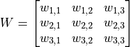 ，外加1个偏置项 ，即可得到一个输出信号。例如，对于红框所示的位置，输出信号即为对矩阵  的所有元素求和并加上偏置项 ，记作
的所有元素求和并加上偏置项 ，记作  。
。
不过，3×3 的范围显然不足以处理整个图像，因此我们使用滑动窗口的方法。使用相同的参数 ，但将红框在图像中从左到右滑动，进行逐行扫描，每滑动到一个位置就计算一个值。例如，当红框向右移动一个单位时，我们计算矩阵 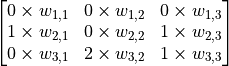 的所有元素的和加上偏置项 ，记作  。由此，和一般的神经元只能输出 1 个值不同，这里的卷积层神经元可以输出一个 5×5 的矩阵
。由此，和一般的神经元只能输出 1 个值不同，这里的卷积层神经元可以输出一个 5×5 的矩阵  。
。

卷积示意图。一个单通道的 7×7 图像在通过一个感受野为 3×3 ，参数为10个的卷积层神经元后，得到 5×5 的矩阵作为卷积结果。¶
下面，我们使用TensorFlow来验证一下上图的计算结果。
将上图中的输入图像、权值矩阵 和偏置项 表示为NumPy数组 image , W , b 如下：
# TensorFlow 的图像表示为 [图像数目，长，宽，色彩通道数] 的四维张量
# 这里我们的输入图像 image 的张量形状为 [1, 7, 7, 1]
image = np.array([[
[0, 0, 0, 0, 0, 0, 0],
[0, 1, 0, 1, 2, 1, 0],
[0, 0, 2, 2, 0, 1, 0],
[0, 1, 1, 0, 2, 1, 0],
[0, 0, 2, 1, 1, 0, 0],
[0, 2, 1, 1, 2, 0, 0],
[0, 0, 0, 0, 0, 0, 0]
]], dtype=np.float32)
image = np.expand_dims(image, axis=-1)
W = np.array([[
[ 0, 0, -1],
[ 0, 1, 0 ],
[-2, 0, 2 ]
]], dtype=np.float32)
b = np.array([1], dtype=np.float32)
然后建立一个仅有一个卷积层的模型，用 W 和 b 初始化 4 ：
model = tf.keras.models.Sequential([
tf.keras.layers.Conv2D(
filters=1, # 卷积层神经元（卷积核）数目
kernel_size=[3, 3], # 感受野大小
kernel_initializer=tf.constant_initializer(W),
bias_initializer=tf.constant_initializer(b)
)]
)
最后将图像数据 image 输入模型，打印输出：
output = model(image)
print(tf.squeeze(output))
程序运行结果为：
tf.Tensor(
[[ 6. 5. -2. 1. 2.]
[ 3. 0. 3. 2. -2.]
[ 4. 2. -1. 0. 0.]
[ 2. 1. 2. -1. -3.]
[ 1. 1. 1. 3. 1.]], shape=(5, 5), dtype=float32)
可见与上图中矩阵 的值一致。
还有一个问题，以上假设图片都只有一个通道（例如灰度图片），但如果图像是彩色的（例如有 RGB 三个通道）该怎么办呢？此时，我们可以为每个通道准备一个 3×3 的权值矩阵，即一共有 3×3×3=27 个权值。对于每个通道，均使用自己的权值矩阵进行处理，输出时将多个通道所输出的值进行加和即可。
可能有读者会注意到，按照上述介绍的方法，每次卷积后的结果相比于原始图像而言，四周都会“少一圈”。比如上面 7×7 的图像，卷积后变成了 5×5 ，这有时会为后面的工作带来麻烦。因此，我们可以设定padding策略。在 tf.keras.layers.Conv2D 中，当我们将 padding 参数设为 same 时，会将周围缺少的部分使用0补齐，使得输出的矩阵大小和输入一致。
最后，既然我们可以使用滑动窗口的方法进行卷积，那么每次滑动的步长是不是可以设置呢？答案是肯定的。通过 tf.keras.layers.Conv2D 的 strides 参数即可设置步长（默认为1）。比如，在上面的例子中，如果我们将步长设定为2，输出的卷积结果即会是一个3×3的矩阵。
事实上，卷积的形式多种多样，以上的介绍只是其中最简单和基础的一种。更多卷积方式的示例可见 Convolution arithmetic 。
池化层（Pooling Layer）的理解则简单得多，其可以理解为对图像进行降采样的过程，对于每一次滑动窗口中的所有值，输出其中的最大值（MaxPooling）、均值或其他方法产生的值。例如，对于一个三通道的 16×16 图像（即一个 16*16*3 的张量），经过感受野为 2×2，滑动步长为 2 的池化层，则得到一个 8*8*3 的张量。
循环神经网络（RNN）¶
循环神经网络（Recurrent Neural Network, RNN）是一种适宜于处理序列数据的神经网络，被广泛用于语言模型、文本生成、机器翻译等。
基础知识和原理
Recurrent Neural Networks Tutorial, Part 1 – Introduction to RNNs
台湾大学李宏毅教授的《机器学习》课程的 Recurrent Neural Network (part 1) Recurrent Neural Network (part 2) 两部分。
LSTM 原理：Understanding LSTM Networks
RNN 序列生成：[Graves2013]
这里，我们使用 RNN 来进行尼采风格文本的自动生成。 5
这个任务的本质其实预测一段英文文本的接续字母的概率分布。比如，我们有以下句子:
I am a studen
这个句子（序列）一共有 13 个字符（包含空格）。当我们阅读到这个由 13 个字符组成的序列后，根据我们的经验，我们可以预测出下一个字符很大概率是 “t”。我们希望建立这样一个模型，逐个输入一段长为 seq_length 的序列，输出这些序列接续的下一个字符的概率分布。我们从下一个字符的概率分布中采样作为预测值，然后滚雪球式地生成下两个字符，下三个字符等等，即可完成文本的生成任务。
首先，还是实现一个简单的 DataLoader 类来读取文本，并以字符为单位进行编码。设字符种类数为 num_chars ，则每种字符赋予一个 0 到 num_chars - 1 之间的唯一整数编号 i。
class DataLoader():
def __init__(self):
path = tf.keras.utils.get_file('nietzsche.txt',
origin='https://s3.amazonaws.com/text-datasets/nietzsche.txt')
with open(path, encoding='utf-8') as f:
self.raw_text = f.read().lower()
self.chars = sorted(list(set(self.raw_text)))
self.char_indices = dict((c, i) for i, c in enumerate(self.chars))
self.indices_char = dict((i, c) for i, c in enumerate(self.chars))
self.text = [self.char_indices[c] for c in self.raw_text]
def get_batch(self, seq_length, batch_size):
seq = []
next_char = []
for i in range(batch_size):
index = np.random.randint(0, len(self.text) - seq_length)
seq.append(self.text[index:index+seq_length])
next_char.append(self.text[index+seq_length])
return np.array(seq), np.array(next_char) # [batch_size, seq_length], [num_batch]
接下来进行模型的实现。在 __init__ 方法中我们实例化一个常用的 LSTMCell 单元，以及一个线性变换用的全连接层，我们首先对序列进行“One Hot”操作，即将序列中的每个字符的编码 i 均变换为一个 num_char 维向量，其第 i 位为 1，其余均为 0。变换后的序列张量形状为 [seq_length, num_chars] 。然后，我们初始化 RNN 单元的状态，存入变量 state 中。接下来，将序列从头到尾依次送入 RNN 单元，即在 t 时刻，将上一个时刻 t-1 的 RNN 单元状态 state 和序列的第 t 个元素 inputs[t, :] 送入 RNN 单元，得到当前时刻的输出 output 和 RNN 单元状态。取 RNN 单元最后一次的输出，通过全连接层变换到 num_chars 维，即作为模型的输出。

output, state = self.cell(inputs[:, t, :], state) 图示¶
{kind=link}
具体实现如下：
class RNN(tf.keras.Model):
def __init__(self, num_chars, batch_size, seq_length):
super().__init__()
self.num_chars = num_chars
self.seq_length = seq_length
self.batch_size = batch_size
self.cell = tf.keras.layers.LSTMCell(units=256)
self.dense = tf.keras.layers.Dense(units=self.num_chars)
def call(self, inputs, from_logits=False):
inputs = tf.one_hot(inputs, depth=self.num_chars) # [batch_size, seq_length, num_chars]
state = self.cell.get_initial_state(batch_size=self.batch_size, dtype=tf.float32)
for t in range(self.seq_length):
output, state = self.cell(inputs[:, t, :], state)
logits = self.dense(output)
if from_logits:
return logits
else:
return tf.nn.softmax(logits)
定义一些模型超参数：
num_batches = 1000
seq_length = 40
batch_size = 50
learning_rate = 1e-3
训练过程与前节基本一致，在此复述：
从
DataLoader中随机取一批训练数据；将这批数据送入模型，计算出模型的预测值；
将模型预测值与真实值进行比较，计算损失函数（loss）；
计算损失函数关于模型变量的导数；
使用优化器更新模型参数以最小化损失函数。
data_loader = DataLoader()
model = RNN(num_chars=len(data_loader.chars), batch_size=batch_size, seq_length=seq_length)
optimizer = tf.keras.optimizers.Adam(learning_rate=learning_rate)
for batch_index in range(num_batches):
X, y = data_loader.get_batch(seq_length, batch_size)
with tf.GradientTape() as tape:
y_pred = model(X)
loss = tf.keras.losses.sparse_categorical_crossentropy(y_true=y, y_pred=y_pred)
loss = tf.reduce_mean(loss)
print("batch %d: loss %f" % (batch_index, loss.numpy()))
grads = tape.gradient(loss, model.variables)
optimizer.apply_gradients(grads_and_vars=zip(grads, model.variables))
关于文本生成的过程有一点需要特别注意。之前，我们一直使用 tf.argmax() 函数，将对应概率最大的值作为预测值。然而对于文本生成而言，这样的预测方式过于绝对，会使得生成的文本失去丰富性。于是，我们使用 np.random.choice() 函数按照生成的概率分布取样。这样，即使是对应概率较小的字符，也有机会被取样到。同时，我们加入一个 temperature 参数控制分布的形状，参数值越大则分布越平缓（最大值和最小值的差值越小），生成文本的丰富度越高；参数值越小则分布越陡峭，生成文本的丰富度越低。
def predict(self, inputs, temperature=1.):
batch_size, _ = tf.shape(inputs)
logits = self(inputs, from_logits=True)
prob = tf.nn.softmax(logits / temperature).numpy()
return np.array([np.random.choice(self.num_chars, p=prob[i, :])
for i in range(batch_size.numpy())])
通过这种方式进行 “滚雪球” 式的连续预测，即可得到生成文本。
X_, _ = data_loader.get_batch(seq_length, 1)
for diversity in [0.2, 0.5, 1.0, 1.2]:
X = X_
print("diversity %f:" % diversity)
for t in range(400):
y_pred = model.predict(X, diversity)
print(data_loader.indices_char[y_pred[0]], end='', flush=True)
X = np.concatenate([X[:, 1:], np.expand_dims(y_pred, axis=1)], axis=-1)
print("\n")
生成的文本如下:
diversity 0.200000:
conserted and conseive to the conterned to it is a self--and seast and the selfes as a seast the expecience and and and the self--and the sered is a the enderself and the sersed and as a the concertion of the series of the self in the self--and the serse and and the seried enes and seast and the sense and the eadure to the self and the present and as a to the self--and the seligious and the enders
diversity 0.500000:
can is reast to as a seligut and the complesed
has fool which the self as it is a the beasing and us immery and seese for entoured underself of the seless and the sired a mears and everyther to out every sone thes and reapres and seralise as a streed liees of the serse to pease the cersess of the selung the elie one of the were as we and man one were perser has persines and conceity of all self-el
diversity 1.000000:
entoles by
their lisevers de weltaale, arh pesylmered, and so jejurted count have foursies as is
descinty iamo; to semplization refold, we dancey or theicks-welf--atolitious on his
such which
here
oth idey of pire master, ie gerw their endwit in ids, is an trees constenved mase commars is leed mad decemshime to the mor the elige. the fedies (byun their ope wopperfitious--antile and the it as the f
diversity 1.200000:
cain, elvotidue, madehoublesily
inselfy!--ie the rads incults of to prusely le]enfes patuateded:.--a coud--theiritibaior "nrallysengleswout peessparify oonsgoscess teemind thenry ansken suprerial mus, cigitioum: 4reas. whouph: who
eved
arn inneves to sya" natorne. hag open reals whicame oderedte,[fingo is
zisternethta simalfule dereeg hesls lang-lyes thas quiin turjentimy; periaspedey tomm--whach
循环神经网络的工作过程
循环神经网络是一个处理时间序列数据的神经网络结构，也就是说，我们需要在脑海里有一根时间轴，循环神经网络具有初始状态  ，在每个时间点 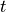 迭代对当前时间的输入
，在每个时间点 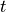 迭代对当前时间的输入  进行处理，修改自身的状态
进行处理，修改自身的状态  ，并进行输出 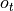 。
，并进行输出 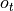 。
循环神经网络的核心是状态  ，是一个特定维数的向量，类似于神经网络的 “记忆”。在
，是一个特定维数的向量，类似于神经网络的 “记忆”。在  的初始时刻， 被赋予一个初始值（常用的为全 0 向量）。然后，我们用类似于递归的方法来描述循环神经网络的工作过程。即在 时刻，我们假设
的初始时刻， 被赋予一个初始值（常用的为全 0 向量）。然后，我们用类似于递归的方法来描述循环神经网络的工作过程。即在 时刻，我们假设  已经求出，关注如何在此基础上求出
已经求出，关注如何在此基础上求出  ：
：
对输入向量
通过矩阵  进行线性变换，
进行线性变换， 与状态 s 具有相同的维度；
与状态 s 具有相同的维度；对
通过矩阵 进行线性变换，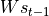 与状态 s 具有相同的维度；将上述得到的两个向量相加并通过激活函数，作为当前状态
的值，即 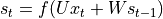。也就是说，当前状态的值是上一个状态的值和当前输入进行某种信息整合而产生的；对当前状态
通过矩阵  进行线性变换，得到当前时刻的输出 。
进行线性变换，得到当前时刻的输出 。

RNN 工作过程图示（来自 http://www.wildml.com/2015/09/recurrent-neural-networks-tutorial-part-1-introduction-to-rnns/）¶
我们假设输入向量 、状态 和输出向量 的维度分别为  、、
、、 ，则
，则  、
、 、
、 。
。
上述为最基础的 RNN 原理介绍。在实际使用时往往使用一些常见的改进型，如LSTM（长短期记忆神经网络，解决了长序列的梯度消失问题，适用于较长的序列）、GRU等。
深度强化学习（DRL）¶
强化学习 （Reinforcement learning，RL）强调如何基于环境而行动，以取得最大化的预期利益。结合了深度学习技术后的强化学习更是如虎添翼。这两年广为人知的 AlphaGo 即是深度强化学习的典型应用。
这里，我们使用深度强化学习玩 CartPole（倒立摆）游戏。倒立摆是控制论中的经典问题，在这个游戏中，一根杆的底部与一个小车通过轴相连，而杆的重心在轴之上，因此是一个不稳定的系统。在重力的作用下，杆很容易倒下。而我们则需要控制小车在水平的轨道上进行左右运动，以使得杆一直保持竖直平衡状态。

CartPole 游戏¶
我们使用 OpenAI 推出的 Gym 环境库 中的 CartPole 游戏环境，可使用 pip install gym 进行安装，具体安装步骤和教程可参考 官方文档 和 这里 。和Gym的交互过程很像是一个回合制游戏，我们首先获得游戏的初始状态（比如杆的初始角度和小车位置），然后在每个回合t，我们都需要在当前可行的动作中选择一个并交由Gym执行（比如向左或者向右推动小车，每个回合中二者只能择一），Gym在执行动作后，会返回动作执行后的下一个状态和当前回合所获得的奖励值（比如我们选择向左推动小车并执行后，小车位置更加偏左，而杆的角度更加偏右，Gym将新的角度和位置返回给我们。而如果杆在这一回合仍没有倒下，Gym同时返回给我们一个小的正奖励）。这个过程可以一直迭代下去，直到游戏终止（比如杆倒下了）。在 Python 中，Gym 的基本调用方法如下：
import gym
env = gym.make('CartPole-v1') # 实例化一个游戏环境，参数为游戏名称
state = env.reset() # 初始化环境，获得初始状态
while True:
env.render() # 对当前帧进行渲染，绘图到屏幕
action = model.predict(state) # 假设我们有一个训练好的模型，能够通过当前状态预测出这时应该进行的动作
next_state, reward, done, info = env.step(action) # 让环境执行动作，获得执行完动作的下一个状态，动作的奖励，游戏是否已结束以及额外信息
if done: # 如果游戏结束则退出循环
break
那么，我们的任务就是训练出一个模型，能够根据当前的状态预测出应该进行的一个好的动作。粗略地说，一个好的动作应当能够最大化整个游戏过程中获得的奖励之和，这也是强化学习的目标。以CartPole游戏为例，我们的目标是希望做出合适的动作使得杆一直不倒，即游戏交互的回合数尽可能地多。而回合每进行一次，我们都会获得一个小的正奖励，回合数越多则累积的奖励值也越高。因此，我们最大化游戏过程中的奖励之和与我们的最终目标是一致的。
以下代码展示了如何使用深度强化学习中的 Deep Q-Learning 方法来训练模型。首先，我们引入TensorFlow、Gym和一些常用库，并定义一些模型超参数：
import tensorflow as tf
import numpy as np
import gym
import random
from collections import deque
num_episodes = 500 # 游戏训练的总episode数量
num_exploration_episodes = 100 # 探索过程所占的episode数量
max_len_episode = 1000 # 每个episode的最大回合数
batch_size = 32 # 批次大小
learning_rate = 1e-3 # 学习率
gamma = 1. # 折扣因子
initial_epsilon = 1. # 探索起始时的探索率
final_epsilon = 0.01 # 探索终止时的探索率
然后，我们使用 tf.keras.Model 建立一个Q函数网络（Q-network），用于拟合Q Learning中的Q函数。这里我们使用较简单的多层全连接神经网络进行拟合。该网络输入当前状态，输出各个动作下的Q-value（CartPole下为2维，即向左和向右推动小车）。
class QNetwork(tf.keras.Model):
def __init__(self):
super().__init__()
self.dense1 = tf.keras.layers.Dense(units=24, activation=tf.nn.relu)
self.dense2 = tf.keras.layers.Dense(units=24, activation=tf.nn.relu)
self.dense3 = tf.keras.layers.Dense(units=2)
def call(self, inputs):
x = self.dense1(inputs)
x = self.dense2(x)
x = self.dense3(x)
return x
def predict(self, inputs):
q_values = self(inputs)
return tf.argmax(q_values, axis=-1)
最后，我们在主程序中实现Q Learning算法。
if __name__ == '__main__':
env = gym.make('CartPole-v1') # 实例化一个游戏环境，参数为游戏名称
model = QNetwork()
optimizer = tf.keras.optimizers.Adam(learning_rate=learning_rate)
replay_buffer = deque(maxlen=10000) # 使用一个 deque 作为 Q Learning 的经验回放池
epsilon = initial_epsilon
for episode_id in range(num_episodes):
state = env.reset() # 初始化环境，获得初始状态
epsilon = max( # 计算当前探索率
initial_epsilon * (num_exploration_episodes - episode_id) / num_exploration_episodes,
final_epsilon)
for t in range(max_len_episode):
env.render() # 对当前帧进行渲染，绘图到屏幕
if random.random() < epsilon: # epsilon-greedy 探索策略，以 epsilon 的概率选择随机动作
action = env.action_space.sample() # 选择随机动作（探索）
else:
action = model.predict(np.expand_dims(state, axis=0)).numpy() # 选择模型计算出的 Q Value 最大的动作
action = action[0]
# 让环境执行动作，获得执行完动作的下一个状态，动作的奖励，游戏是否已结束以及额外信息
next_state, reward, done, info = env.step(action)
# 如果游戏Game Over，给予大的负奖励
reward = -10. if done else reward
# 将(state, action, reward, next_state)的四元组（外加 done 标签表示是否结束）放入经验回放池
replay_buffer.append((state, action, reward, next_state, 1 if done else 0))
# 更新当前 state
state = next_state
if done: # 游戏结束则退出本轮循环，进行下一个 episode
print("episode %d, epsilon %f, score %d" % (episode_id, epsilon, t))
break
if len(replay_buffer) >= batch_size:
# 从经验回放池中随机取一个批次的四元组，并分别转换为 NumPy 数组
batch_state, batch_action, batch_reward, batch_next_state, batch_done = zip(
*random.sample(replay_buffer, batch_size))
batch_state, batch_reward, batch_next_state, batch_done = \
[np.array(a, dtype=np.float32) for a in [batch_state, batch_reward, batch_next_state, batch_done]]
batch_action = np.array(batch_action, dtype=np.int32)
q_value = model(batch_next_state)
y = batch_reward + (gamma * tf.reduce_max(q_value, axis=1)) * (1 - batch_done) # 计算 y 值
with tf.GradientTape() as tape:
loss = tf.keras.losses.mean_squared_error( # 最小化 y 和 Q-value 的距离
y_true=y,
y_pred=tf.reduce_sum(model(batch_state) * tf.one_hot(batch_action, depth=2), axis=1)
)
grads = tape.gradient(loss, model.variables)
optimizer.apply_gradients(grads_and_vars=zip(grads, model.variables)) # 计算梯度并更新参数
对于不同的任务（或者说环境），我们需要根据任务的特点，设计不同的状态以及采取合适的网络来拟合 Q 函数。例如，如果我们考虑经典的打砖块游戏（Gym 环境库中的 Breakout-v0 ），每一次执行动作（挡板向左、向右或不动），都会返回一个 210 * 160 * 3 的 RGB 图片，表示当前屏幕画面。为了给打砖块游戏这个任务设计合适的状态表示，我们有以下分析：
砖块的颜色信息并不是很重要，画面转换成灰度也不影响操作，因此可以去除状态中的颜色信息（即将图片转为灰度表示）；
小球移动的信息很重要，如果只知道单帧画面而不知道小球往哪边运动，即使是人也很难判断挡板应当移动的方向。因此，必须在状态中加入表征小球运动方向的信息。一个简单的方式是将当前帧与前面几帧的画面进行叠加，得到一个
210 * 160 * X（X 为叠加帧数）的状态表示；每帧的分辨率不需要特别高，只要能大致表征方块、小球和挡板的位置以做出决策即可，因此对于每帧的长宽可做适当压缩。
而考虑到我们需要从图像信息中提取特征，使用 CNN 作为拟合 Q 函数的网络将更为适合。由此，将上面的 QNetwork 更换为 CNN 网络，并对状态做一些修改，即可用于玩一些简单的视频游戏。
深度强化学习原理初探
与前面所介绍的卷积神经网络和循环神经网络不同，强化学习（Reinforcement Learning）是一种学习算法的类型。
TODO
Keras Pipeline *¶
以上示例均使用了 Keras 的 Subclassing API 建立模型，即对 tf.keras.Model 类进行扩展以定义自己的新模型，同时手工编写了训练和评估模型的流程。这种方式灵活度高，且与其他流行的深度学习框架（如 PyTorch、Chainer）共通，是本手册所推荐的方法。不过在很多时候，我们只需要建立一个结构相对简单和典型的神经网络（比如上文中的 MLP 和 CNN），并使用常规的手段进行训练。这时，Keras 也给我们提供了另一套更为简单高效的内置方法来建立、训练和评估模型。
Keras Sequential/Functional API 模式建立模型¶
最典型和常用的神经网络结构是将一堆层按特定顺序叠加起来，那么，我们是不是只需要提供一个层的列表，就能由 Keras 将它们自动首尾相连，形成模型呢？Keras 的 Sequential API 正是如此。通过向 tf.keras.models.Sequential() 提供一个层的列表，就能快速地建立一个 tf.keras.Model 模型并返回：
model = tf.keras.models.Sequential([
tf.keras.layers.Flatten(),
tf.keras.layers.Dense(100, activation=tf.nn.relu),
tf.keras.layers.Dense(10),
tf.keras.layers.Softmax()
])
不过，这种层叠结构并不能表示任意的神经网络结构。为此，Keras 提供了 Functional API，帮助我们建立更为复杂的模型，例如多输入 / 输出或存在参数共享的模型。其使用方法是将层作为可调用的对象并返回张量（这点与之前章节的使用方法一致），并将输入向量和输出向量提供给 tf.keras.Model 的 inputs 和 outputs 参数，示例如下：
inputs = tf.keras.Input(shape=(28, 28, 1))
x = tf.keras.layers.Flatten()(inputs)
x = tf.keras.layers.Dense(units=100, activation=tf.nn.relu)(x)
x = tf.keras.layers.Dense(units=10)(x)
outputs = tf.keras.layers.Softmax()(x)
model = tf.keras.Model(inputs=inputs, outputs=outputs)
使用 Keras Model 的 compile 、 fit 和 evaluate 方法训练和评估模型¶
当模型建立完成后，通过 tf.keras.Model 的 compile 方法配置训练过程：
model.compile(
optimizer=tf.keras.optimizers.Adam(learning_rate=0.001),
loss=tf.keras.losses.sparse_categorical_crossentropy,
metrics=[tf.keras.metrics.sparse_categorical_accuracy]
)
tf.keras.Model.compile 接受 3 个重要的参数：
oplimizer：优化器，可从tf.keras.optimizers中选择；
loss：损失函数，可从tf.keras.losses中选择；
metrics：评估指标，可从tf.keras.metrics中选择。
接下来，可以使用 tf.keras.Model 的 fit 方法训练模型：
model.fit(data_loader.train_data, data_loader.train_label, epochs=num_epochs, batch_size=batch_size)
tf.keras.Model.fit 接受 5 个重要的参数：
x：训练数据；
y：目标数据（数据标签）；
epochs：将训练数据迭代多少遍；
batch_size：批次的大小；
validation_data：验证数据，可用于在训练过程中监控模型的性能。
Keras 支持使用 tf.data.Dataset 进行训练，详见 tf.data 。
最后，使用 tf.keras.Model.evaluate 评估训练效果，提供测试数据及标签即可：
print(model.evaluate(data_loader.test_data, data_loader.test_label))
自定义层、损失函数和评估指标 *¶
可能你还会问，如果现有的这些层无法满足我的要求，我需要定义自己的层怎么办？事实上，我们不仅可以继承 tf.keras.Model 编写自己的模型类，也可以继承 tf.keras.layers.Layer 编写自己的层。
自定义层¶
自定义层需要继承 tf.keras.layers.Layer 类，并重写 __init__ 、 build 和 call 三个方法，如下所示：
class MyLayer(tf.keras.layers.Layer):
def __init__(self):
super().__init__()
# 初始化代码
def build(self, input_shape): # input_shape 是一个 TensorShape 类型对象，提供输入的形状
# 在第一次使用该层的时候调用该部分代码，在这里创建变量可以使得变量的形状自适应输入的形状
# 而不需要使用者额外指定变量形状。
# 如果已经可以完全确定变量的形状，也可以在__init__部分创建变量
self.variable_0 = self.add_weight(...)
self.variable_1 = self.add_weight(...)
def call(self, inputs):
# 模型调用的代码（处理输入并返回输出）
return output
例如，如果我们要自己实现一个 本章第一节 中的全连接层（ tf.keras.layers.Dense ），可以按如下方式编写。此代码在 build 方法中创建两个变量，并在 call 方法中使用创建的变量进行运算：
class LinearLayer(tf.keras.layers.Layer):
def __init__(self, units):
super().__init__()
self.units = units
def build(self, input_shape): # 这里 input_shape 是第一次运行call()时参数inputs的形状
self.w = self.add_variable(name='w',
shape=[input_shape[-1], self.units], initializer=tf.zeros_initializer())
self.b = self.add_variable(name='b',
shape=[self.units], initializer=tf.zeros_initializer())
def call(self, inputs):
y_pred = tf.matmul(inputs, self.w) + self.b
return y_pred
在定义模型的时候，我们便可以如同 Keras 中的其他层一样，调用我们自定义的层 LinearLayer：
class LinearModel(tf.keras.Model):
def __init__(self):
super().__init__()
self.layer = LinearLayer(units=1)
def call(self, inputs):
output = self.layer(inputs)
return output
自定义损失函数和评估指标¶
自定义损失函数需要继承 tf.keras.losses.Loss 类，重写 call 方法即可，输入真实值 y_true 和模型预测值 y_pred ，输出模型预测值和真实值之间通过自定义的损失函数计算出的损失值。下面的示例为均方差损失函数：
class MeanSquaredError(tf.keras.losses.Loss):
def call(self, y_true, y_pred):
return tf.reduce_mean(tf.square(y_pred - y_true))
自定义评估指标需要继承 tf.keras.metrics.Metric 类，并重写 __init__ 、 update_state 和 result 三个方法。下面的示例对前面用到的 SparseCategoricalAccuracy 评估指标类做了一个简单的重实现：
class SparseCategoricalAccuracy(tf.keras.metrics.Metric):
def __init__(self):
super().__init__()
self.total = self.add_weight(name='total', dtype=tf.int32, initializer=tf.zeros_initializer())
self.count = self.add_weight(name='count', dtype=tf.int32, initializer=tf.zeros_initializer())
def update_state(self, y_true, y_pred, sample_weight=None):
values = tf.cast(tf.equal(y_true, tf.argmax(y_pred, axis=-1, output_type=tf.int32)), tf.int32)
self.total.assign_add(tf.shape(y_true)[0])
self.count.assign_add(tf.reduce_sum(values))
def result(self):
return self.count / self.total
- LeCun1998
LeCun, L. Bottou, Y. Bengio, and P. Haffner. “Gradient-based learning applied to document recognition.” Proceedings of the IEEE, 86(11):2278-2324, November 1998. http://yann.lecun.com/exdb/mnist/
- Graves2013
Graves, Alex. “Generating Sequences With Recurrent Neural Networks.” ArXiv:1308.0850 [Cs], August 4, 2013. http://arxiv.org/abs/1308.0850.
- Mnih2013
Mnih, Volodymyr, Koray Kavukcuoglu, David Silver, Alex Graves, Ioannis Antonoglou, Daan Wierstra, and Martin Riedmiller. “Playing Atari with Deep Reinforcement Learning.” ArXiv:1312.5602 [Cs], December 19, 2013. http://arxiv.org/abs/1312.5602.